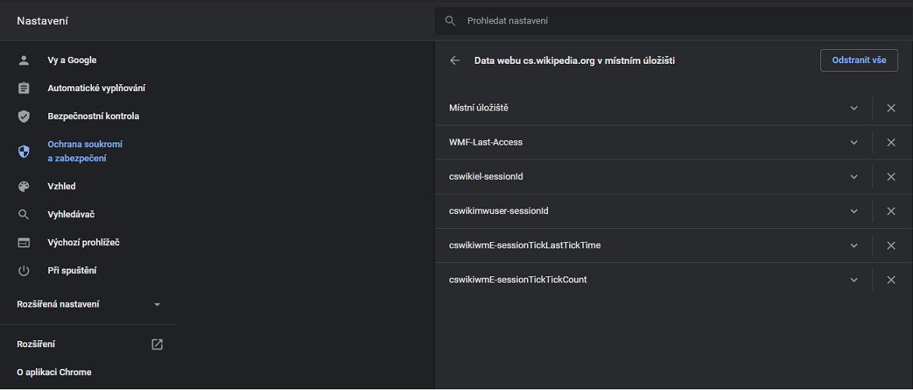

World Wide Web (WWW, také pouze zkráceně web), ve volném překladu „celosvětová pavučina“, je
označení pro
aplikace internetového protokolu HTTP. Je tím myšlena
soustava propojených hypertextových dokumentů.
Služba se zrodila se v roce 1989 v evropském vědeckém centru CERN v
Ženevě díky Timu Berners-Lee.
Za hypertext označujeme takový text, který obsahuje propojení na jiné texty pomocí tzv.hypertextových
odkazů. Ve službě WWW jsou realizovány jako tzv. URL odkazy.
Služba je založena na spolupráci WWW klientů (browserů) WWW serverem. Prvním komerčním
prohlížečem webových
stránek byl na počátku 90. let minulého století Mosaic.
Při jejich spolupráci fungují následující mechanismy:
komunikační protokol HTTP, pomocí něhož WWW klient a WWW
server komunikují
jazyk HTML (HyperText Markup Language), definující formát WWW stránek, které server vrací klientovi.
World Wide Web Consortium (W3C) je mezinárodní konsorcium jehož členové společně s veřejností vyvíjejí
webové
standardy pro WWW. Konsorciu předsedá Tim Berners-Lee.
Internet a WWW
WWW - otázky a odpovědi
1. Jakou roli plní webový server? Uveďtě příklady webových serverů.
Server je bezobslužný program, který přijímá a obsluhuje požadavky klientů. Webový server
je
připojenk počítačové síti a přijímá požadavky v souladu s protokolem HTTP (HTTP Request). Tyto požadavky
vyřizuje
a počítači, který požadavek vznesl, vrací odpověď.
2. Jak se nazývá program označovaný jako webový klient? Co je jeho úkolem? Vyjmenujte
nejpoužívanější webové klienty.
Klient (browser, prohlížeč) je program, který komunikuje s uživatelem a na základě
jeho
pokynů se obrací na jednotlivé servery, získává od nich data a zobrazuje je.
3. Jak probíhá komunikace mezi webovým klientem a webovým serverem?
Webový server je připojen k počítačové síti a přijímá požadavky v souladu s protokolem HTTP (HTTP
Request). Tyto požadavky vyřizuje a počítači, který požadavek vznesl, vrací odpověď. Odpověď
serveru je
opět ve tvaru HTTP (HTTP Response), je uvozena hlavičkou obsahující stavový kód, za níž následuje
samotný obsah.
4.Co je HTTP?
HTTP je jednoduchý aplikační protokol s komunikací
charakteru požadavek – odpověď. Žádosti mají formu jednoduchých příkazů a mohou být upřesňovány pomocí
různých parametrů, tzv. hlaviček. Odpovědi mají číselný charakter a nejčastěji obsahují i WWW stránku,
kterou
klient požadoval.
5.Vypište do tabulky stavové kódy HTTP.
Stavové kódy
Odpověď serveru
1xx
informační zpráva
2xx
úspěšné vyřízení požadavku
3xx
problémy spojené s přesměrováním
4xx
chyby související s vyřízením požadavku (stránka není dostupná, apod.)
5xx
interní chyby serveru
6.Proč se stále častěji využívá protokol HTTPS?
HTTPS je nadstavba protokolu HTTP, která poskytuje zvýšenou bezpečnost před
odposloucháváním či podvržením dat. Pro komunikaci pomocí HTTPS
musí nejdříve server vlastnit certifikát. Certifikát musí být podepsán tzv. certifikační autoritou,
která zaručí, že vlastník certifikátu se nevydává za nikoho jiného. Webové prohlížeče jsou většinou
vybaveny podpisovými certifikáty největších podpisových autorit.
K výhodám HTTPS patří:
možnost ověření identity
důvěrnost přenášených dat
integrita obsahu
cenou za to je mírně složitější konfigurace webového
serveru a potřeba udržování certifikátu.
7.Vysvětlete zkratku URL a připojte pět různých příkladů URL odkazů.
URL je řetězec znaků s definovanou strukturou, který
slouží k
přesné specifikaci umístění zdrojů informací (ve smyslu dokument nebo služba) na Internetu. URL
definuje doménovou adresu serveru, umístění zdroje na serveru a protokol, kterým je možné zdroj
zpřístupnit.
8.Co jsou a k čemu slouží tzv. cookies? Připojte obrázek ukazující uložená cookies k některé
internetové stránce.
Jako cookie (anglicky sušenka) se v protokolu HTTP označuje malé množství dat,
která WWW server pošle prohlížeči a ten je uloží na počítači uživatele. Při každé další návštěvě
téhož serveru pak prohlížeč tato data posílá zpět serveru. Cookies běžně slouží k rozlišování
jednotlivých uživatelů, ukládá se do nich obsah „nákupního košíku“ v elektronických obchodech,
uživatelské předvolby apod. Cookie mohou být nebezpečné pro ochranu soukromí. Navštívený web si
totiž může ukládat do cookies jakékoliv informace, které o návštěvníkovi shromáždí. Těchto informací
se dá posléze i proti vůli návštěvníka zneužívat pro cílenou reklamu, statistické vyhodnocování
chování návštěvníků apod.

Internetové cookies
9.Vypište přehledně jednotlivé fáze fungování internetových vyhledávačů.
Prohledání webových stránek. Pro prohledání webových stránek má internetový
vyhledávač
automatický program, tzv. vyhledávací robot (crawler, bot, nebo též spider – „pavouk“), který
prochází celý webový prostor. Robot dostane na začátku seznam atraktivních vstupních míst
(odkazů), jejichž obsah si přečte, uloží do databáze a zapamatuje si navštívenou adresu odkazu,
aby se na ni již podruhé nevracel. Z obsahu stažené stránky vybere seznam všech obsažených
odkazů a opět všechny odkazy navštíví. Cyklus návštěvy, sesbírání odkazů a dalších návštěv se
stále opakuje. Robot se na navštívené stránky vrací v pravidelných intervalech, aby zjistil, zda
se na stránce neobjevily nějaké nové informace.
Indexování
Databázi obsahující uložené obsahy navštívených stránek je potřeba
indexovat, aby
bylo možné podle zadaných slov co nejrychleji najít adresy stránek, které je obsahují. Zároveň
je nutné vystavět index tak, aby poskytoval na prvních místech stránky s nejvyšší užitnou
hodnotou (relevancí, mající nejvyšší hodnocení kvality, nejvyšší váhu). Pro výpočet relevance se
používají nejrůznější algoritmy, které jsou založeny na nejrůznějších znacích stránek a různých
úhlech analýzy jejich obsahu:
Váha slov
Stránka má vyšší hodnocení, když má hledané slovo na stránce
vyšší váhu. Váha
slov se zvyšuje, je-li slovo v titulku stránky, nadpisu nebo blíže k začátku stránky,
případně se na stránce opakuje. Váhu slov lze zneužít vkládáním atraktivních slov do
obsahu stránky bez ohledu na její skutečný obsah nebo prostým opakováním slov.
Vyhledávač se brání penalizací (snížením kvality) podezřelých stránek.
Atraktivita stránky
Stránka má vyšší hodnocení, když na ni odkazuje
více jiných
stránek, protože zřejmě obsahuje zajímavé informace. Atraktivitu lze zneužít vytvářením
falešných stránek, které odkazují na stránku, která má získat vyšší hodnocení.
Vyhledávač se brání sledováním podezřelého náhlého hromadění odkazů.
Serióznost webu
Webové servery, které obsahují velké množství
kvalitních stránek, jsou
při výpočtu váhy zvýhodněny. Seznam se může udržovat i ručními zásahy.
Sponzorované odkazy
Váha odkazu se zvyšuje zaplacením poplatku.
Seriózní vyhledávače se
této praxi vyhýbají nebo zřetelně oddělují výsledky zobrazené na základě komerčního
zvýhodnění. Tento způsob je jedním z možných zdrojů příjmů vyhledávače.
Technická kvalita
Váha odkazu se zvyšuje, pokud jsou stránky správně
sestaveny a
vyhovují webovým standardům.Někdy je nežádoucí, aby robot indexoval některé stránky. Proto existuje
možnost, jak roboty omezit pomocí
souboru robots.txt, který se umisťuje do kořene webového serveru.
Vyhledávání
Databáze a její index se zpřístupní na vstupní stránce
vyhledávače. Uživatel získá
po zadání hledaných slov seznam adres, na kterých robot hledaná slova našel. Pro vyšší
přehlednost se zobrazuje kromě odkazu ještě titulek stránky, a okolí nalezených slov.
Vysvětlete zkratku HTML a pojem hypertext.
HTML je v informatice název značkovacího jazyka používaného pro tvorbu webových stránek,
které jsou propojeny hypertextovými odkazy. Za hypertext označujeme takový text, který obsahuje propojení na
jiné texty pomocí tzv. hypertextových odkazů. Ve službě WWW jsou realizovány jako tzv. URL odkazy.